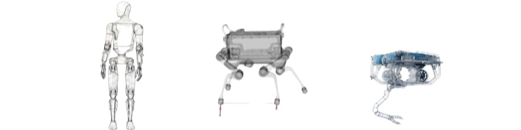

Robotics engineer
Dynamics, control, and simulation for robots.
PhD candidate at Louisiana State University working on uncertainty-aware physics simulation, differentiable dynamics, motion planning, and contact-rich robotic systems.
Experience
Tesla, OptimusPhysics engine intern, 2026
Amazon RoboticsApplied scientist intern, 2025
Photon MarineTechnical sales associate, 2024
LSU iCoreLabRobotics research and teaching assistant, 2022 - Present
Stanbic BankSoftware engineer, 2018 - 2021
Work
casadi-on-gpu GPU acceleration for symbolic functions.
UVMS simulator ROS 2 underwater robot simulation.
floating-KinDyn Differentiable multibody dynamics.
diff_uv Differentiable underwater vehicle dynamics.
Selected Papers
Risk-aware receding-horizon planningIROS 2026
Uncertainty-aware UVMS dynamicsICRA 2026
GPU-accelerated stochastic simulationOCEANS 2026
Adaptive dynamics for unmanned surface vehiclesOCEANS 2026